Colección de Cocina Tradicional
Recetas de Siham
Un viaje gastronómico repleto de sabores auténeticos, aromas especiados y secretos culinarios pasados de generación en generación.
Índice de Recetas
Siham
"La cocina es el arte de compartir el corazón en cada plato."
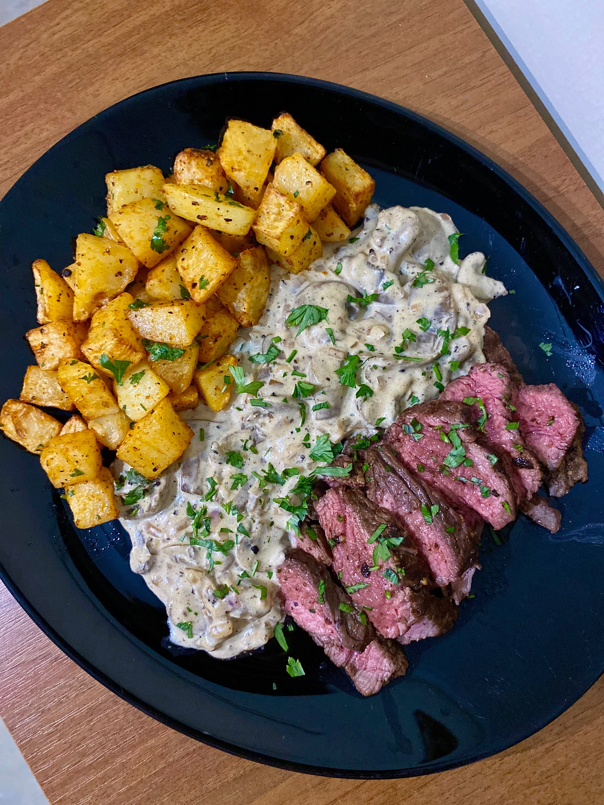
Tiempo
1h 10m
Raciones
4 Pers.
Dificultad
Fácil
Tajine de Pollo con Limón Encurtido y Aceitunas
Ingredientes
- • 1 Pollo entero troceado
- • 2 Limones encurtidos en sal
- • 150g Aceitunas verdes/moradas
- • 2 Cebollas grandes picadas
- • 3 Dientes de ajo machacados
- • Jengibre, azafrán y cúrcuma
- • Cilantro y perejil fresco
- • Aceite de oliva virgen extra
Preparación Paso a Paso
- 1Marinar el pollo con ajo, hierbas picadas, especias y un hilo de aceite de oliva durante 30 min.
- 2En el tajín, pochar la cebolla y dorar los trozos de pollo a fuego medio.
- 3Añadir un vaso de agua, tapar y cocer a fuego lento durante 45 minutos.
- 4Incorporar las pieles del limón cortadas en tiras y las aceitunas 10 minutos antes de apagar el fuego hasta reducir la salsa.
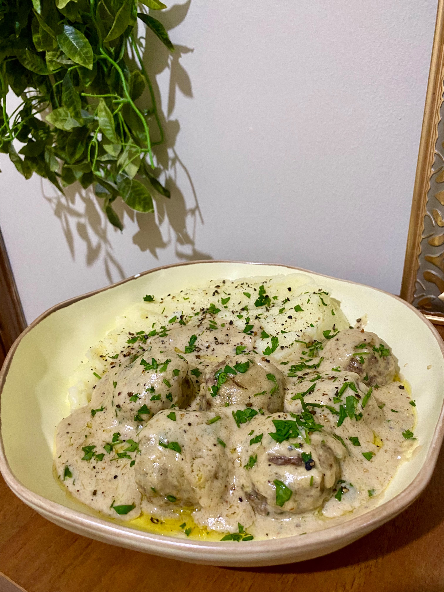
Tiempo
2h 00m
Raciones
6 Pers.
Dificultad
Media
Cuscús Tradicional de Siete Verduras
Ingredientes
- • 500g Sémola fina de cuscús
- • 800g Ternera o cordero
- • Calabaza redonda y calabacín
- • Zanahorias y nabos blancos
- • Col/Repollo y garbanzos cocidos
- • Tomate y cebolla madura
- • Mantequilla rancia (Smen)
- • Pimienta negra, jengibre y azafrán
Preparación Paso a Paso
- 1Cocinar la carne con las especias, tomate y agua en la parte inferior de la cuscusera.
- 2Hidratar el cuscús con agua y un chorrito de aceite. Trabajar con las manos y poner en el vaporero.
- 3Ir incorporando las verduras al caldo según su tiempo de cocción (primero las duras, al final la calabaza).
- 4Repetir el vaporizado del cuscús 3 veces lubricando con Smen o mantequilla. Montar la pirámide y bañar con caldo.
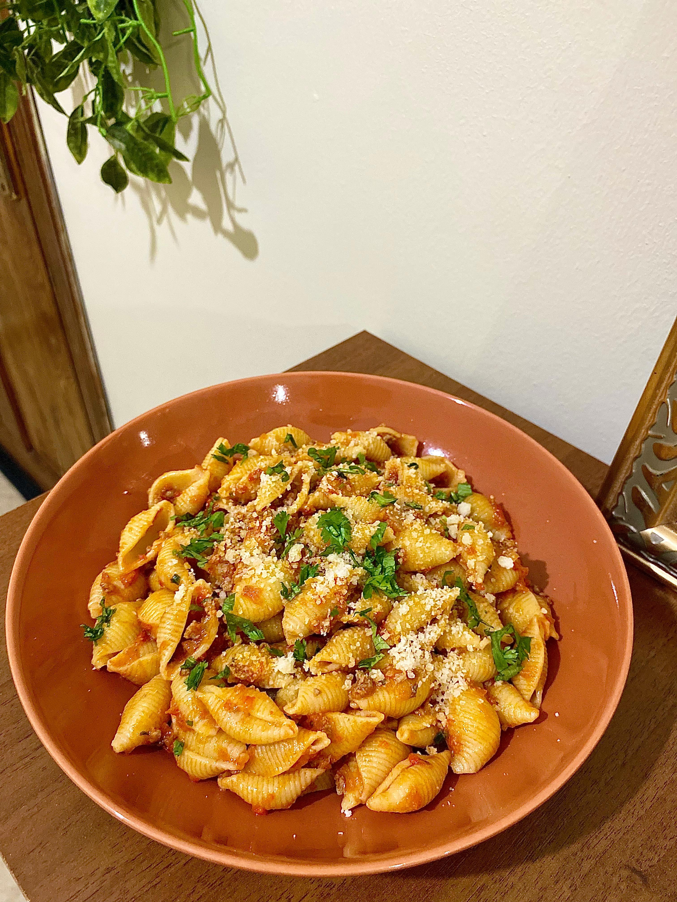
Tiempo
1h 20m
Raciones
6 Pers.
Dificultad
Fácil
Sopa Harira Tradicional Nutritiva
Ingredientes
- • 150g Carne de ternera troceada
- • 1 Taza de garbanzos remojados
- • 1/2 Taza de lentejas marrón
- • 1 kg Tomates frescos triturados
- • Apio, cilantro y perejil fresco
- • 50g Fideos finos de sopa
- • Harina diluida en agua (Tadouira)
- • Canela, jengibre y pimienta
Preparación Paso a Paso
- 1Rehogar la carne picada con las hierbas abundante, cebolla y tomates triturados.
- 2Añadir los garbanzos, lentejas, agua abundante y especias. Cocer a fuego medio durante 50 min.
- 3Incorporar la mezcla de harina con agua batiendo constantemente para dar la cremosidad característica.
- 4Añadir los fideos en los últimos 5 minutos de ebullición. Servir muy caliente con limón y dátiles.
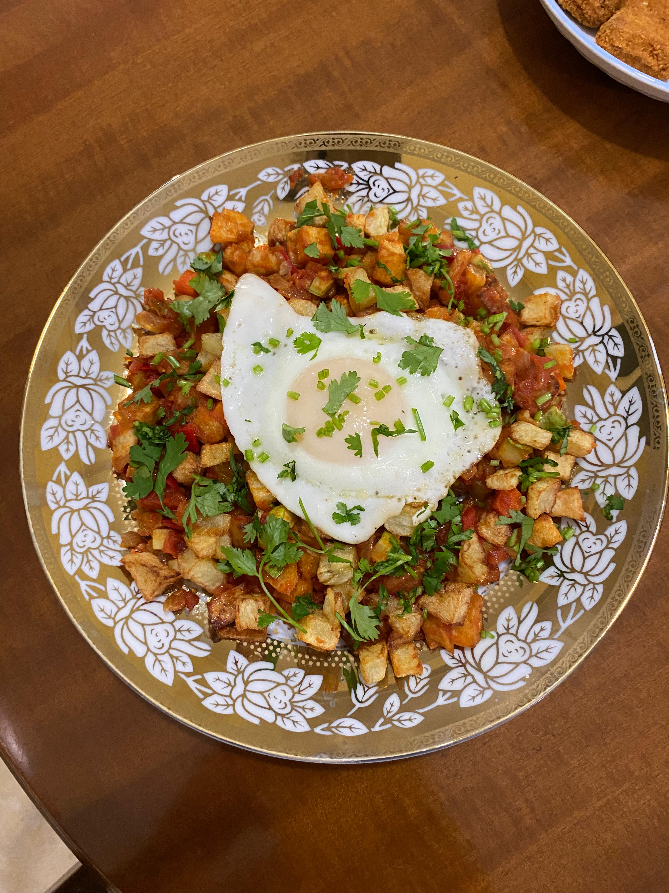
Tiempo
1h 45m
Raciones
8 Pers.
Dificultad
Alta
Pastilla Fina de Pollo y Almendras
Ingredientes
- • 12 Hojas de Masa Filo/Warga
- • 1 kg Pollo entero desmenuzado
- • 250g Almendras fritas picadas
- • 6 Huevos batidos
- • 1kg Cebolla dorada caramelizada
- • Canela molida y azúcar glass
- • Agua de azahar y mantequilla
- • Azafrán puro y jengibre
Preparación Paso a Paso
- 1Cocinar el pollo con cebolla, especias y desmenuzar. Cuajar la salsa resultante con huevos.
- 2Mezclar las almendras crujientes molidas con azúcar, canela y unas gotas de azahar.
- 3Pincelar las hojas de masa filo con mantequilla y disponer en molde redondo intercalando capas.
- 4Hornear a 180°C hasta dorar. Decorar la superficie formando dibujos con canela y azúcar glass.
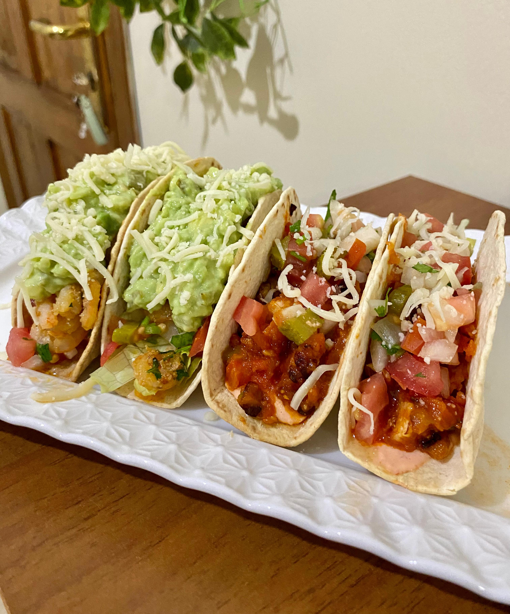
Tiempo
2h 15m
Raciones
5 Pers.
Dificultad
Media
Tajine de Cordero con Ciruelas y Almendras
Ingredientes
- • 1kg Carne de cordero jugosa
- • 250g Ciruelas pasas blandas
- • 100g Almendras fritas en láminas
- • 3 Cucharadas de miel pura
- • Canela en rama y molida
- • Cebolla, ajo y azafrán
Preparación Paso a Paso
- 1Dorar la carne de cordero con cebolla picada y especias en el tajín de barro.
- 2Cocer lentamente a fuego muy suave durante hora y media hasta que la carne se desprenda del hueso.
- 3Caramelizar las ciruelas en una cacerola pequeña con almíbar, miel y canela.
- 4Corona el tajín con las ciruelas glaseadas y espolvorear las almendras tostadas por encima.
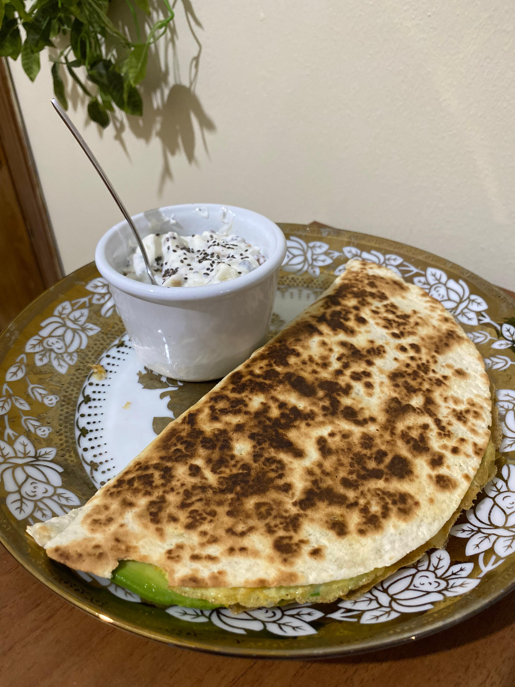
Tiempo
35m
Raciones
4 Pers.
Dificultad
Muy Fácil
Zaalouk de Berenjena Asada y Tomate
Ingredientes
- • 2 Berenjenas grandes frescas
- • 3 Tomates maduros pelados
- • 4 Dientes de ajo picados
- • Pimentón dulce y comino
- • Cilantro fresco y zumo de limón
- • Aceite de oliva virgen extra
Preparación Paso a Paso
- 1Asar las berenjenas al horno o trocear y hervir hasta que estén suaves.
- 2Sofreír los tomates triturados con ajo, aceite de oliva y las especias.
- 3Añadir las berenjenas y machacar con un tenedor en la sartén a fuego lento.
- 4Cocinar hasta reducir todo el líquido. Aliñar con cilantro fresco y servir templado.
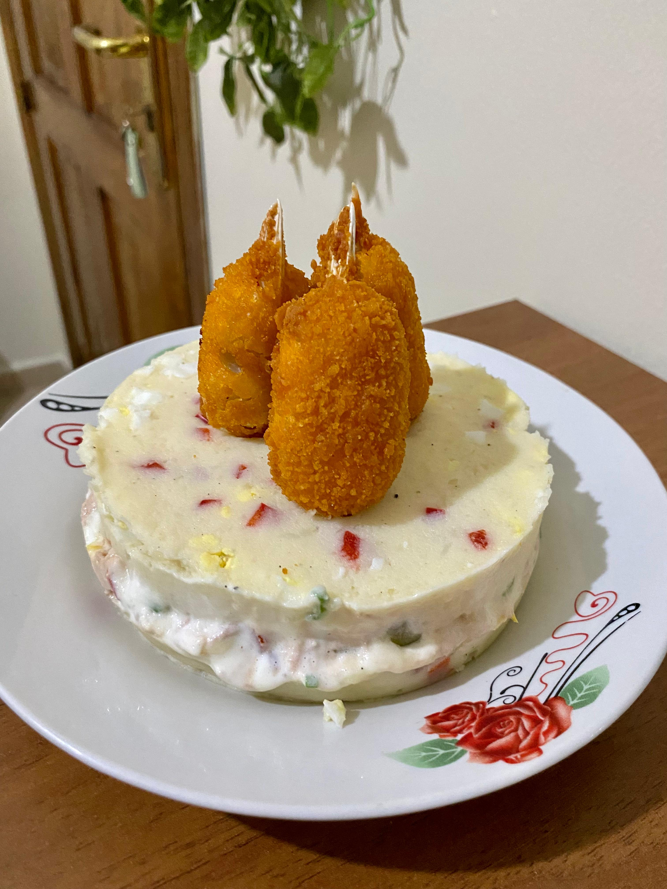
Tiempo
50m
Raciones
6 Pers.
Dificultad
Media
Briouats Crujientes de Carne Picada
Ingredientes
- • 12 Tiras de Masa Filo
- • 400g Carne picada de ternera
- • 1 Cebolla finamente picada
- • Comino, pimentón y canela
- • Perejil y 2 huevos duros picados
- • Aceite para freír o mantequilla
Preparación Paso a Paso
- 1Saltear la carne picada con cebolla, especias y hierbas hasta dorar. Mezclar con huevo duro.
- 2Colocar una cucharada de relleno al borde de cada tira de masa filo.
- 3Plegar alternativamente formando triángulos cerrados perfectos.
- 4Freír en aceite muy caliente o hornear a 190°C hasta que estén crujientes y dorados.
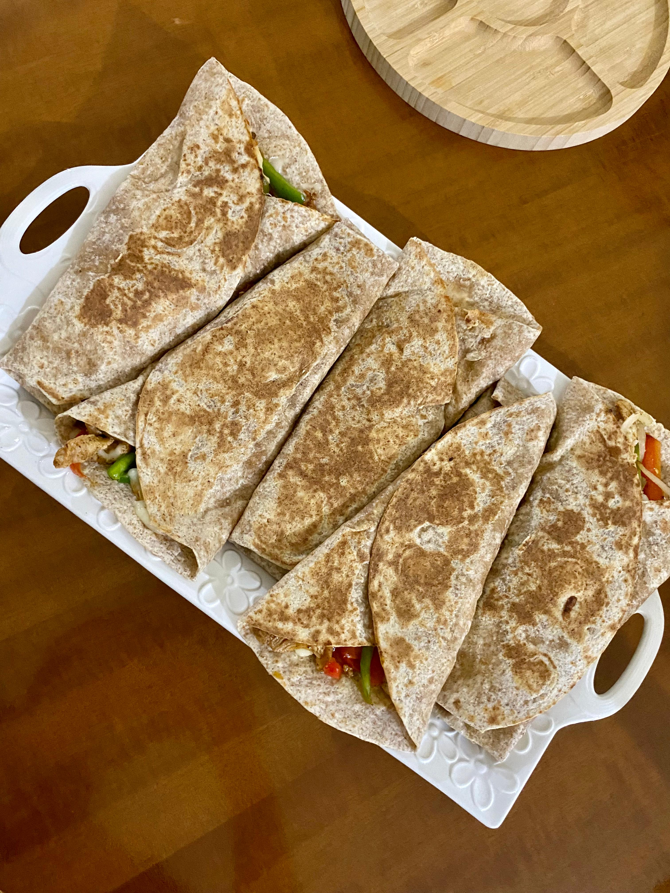
Tiempo
30m
Raciones
4 Pers.
Dificultad
Fácil
Baghrir: Crepes de los Mil Agujeros
Ingredientes
- • 2 Tazas de sémola muy fina
- • 1/2 Taza de harina de trigo
- • 1 Sobre levadura de panadero
- • 1 Sobre levadura química
- • 3 Tazas agua templada
- • Miel y mantequilla derretida
Preparación Paso a Paso
- 1Batir todos los ingredientes en licuadora durante 3 minutos hasta obtener masa fluida.
- 2Dejar fermentar la masa tapada durante 15 minutos en sitio templado.
- 3Cocinar en sartén antiadherente caliente a fuego medio sólo por una cara sin dar la vuelta.
- 4Bañar en caliente con una mezcla fluida de miel pura y mantequilla fundida.
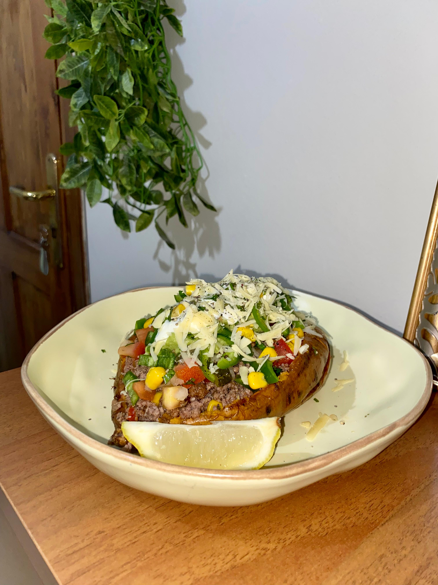
Tiempo
45m
Raciones
4 Pers.
Dificultad
Media
Pan Msemen Hojaldrado Tradicional
Ingredientes
- • 300g Harina de fuerza blanca
- • 150g Sémola fina de trigo duro
- • 1 Cucharadita de sal fina
- • Mantequilla blanda y aceite
- • Agua templada para amasar
Preparación Paso a Paso
- 1Amasar bien la harina con sémola y sal hasta obtener una textura elástica. Hacer bolitas.
- 2Estirar cada bola muy fina usando aceite de oliva hasta que sea translúcida.
- 3Pincelar con mantequilla, espolvorear sémola y doblar en forma de cuadrado en varias capas.
- 4Tostar en sartén caliente por ambos lados hasta que esté bien dorado y crujiente.
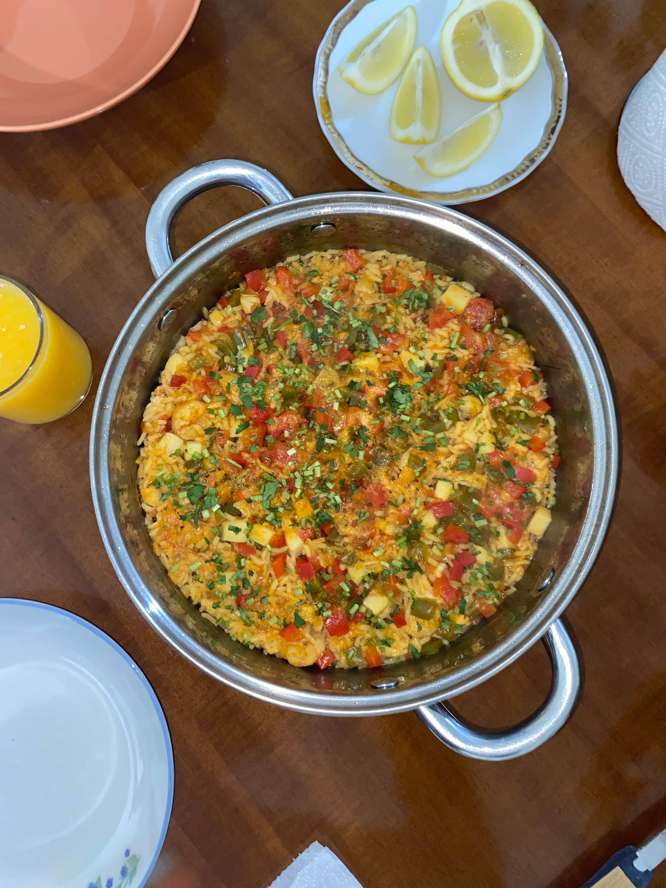
Tiempo
40m
Raciones
6 Pers.
Dificultad
Fácil
Pan Batbout Esponjoso en Sartén
Ingredientes
- • 250g Harina de trigo blanca
- • 250g Sémola fina de trigo duro
- • 1 Cucharada levadura fresca
- • 1 Cucharadita de azúcar y sal
- • Agua tibia para leudar
Preparación Paso a Paso
- 1Mezclar las harinas con la levadura y amasar bien vertiendo agua tibia progresivamente.
- 2Extender la masa y cortar pequeños discos redondos. Dejar reposar 20 min.
- 3Cocinar en sartén antiadherente caliente sin grasa dando la vuelta para que se infle.
- 4Abrir por la mitad y rellenar con ensaladilla, atún o kefta según preferencia.
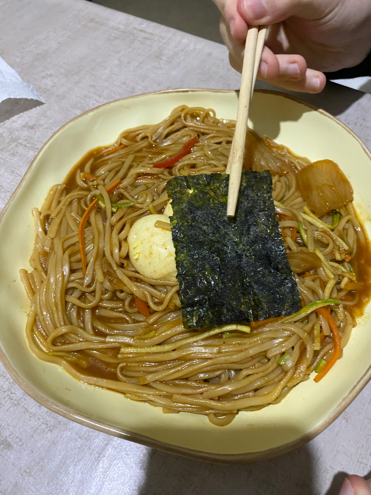
Tiempo
1h 15m
Raciones
6 Pers.
Dificultad
Media
Seffa Medfouna Dulce con Almendras
Ingredientes
- • 500g Fideos finos de Seffa
- • 150g Almendras peladas frotadas
- • 100g Pasas sultanas hidratadas
- • Canela molida y azúcar glass
- • Mantequilla de vaca de calidad
Preparación Paso a Paso
- 1Cocer los fideos al vapor en cuscusera con un chorrito de aceite durante 3 pasadas.
- 2Añadir las pasas en la última pasada de vapor para que se hinchen de humedad.
- 3Mezclar en caliente con abundante mantequilla suave y azúcar glass.
- 4Montar en forma de pirámide y decorar con tiras de canela y almendras crujientes.
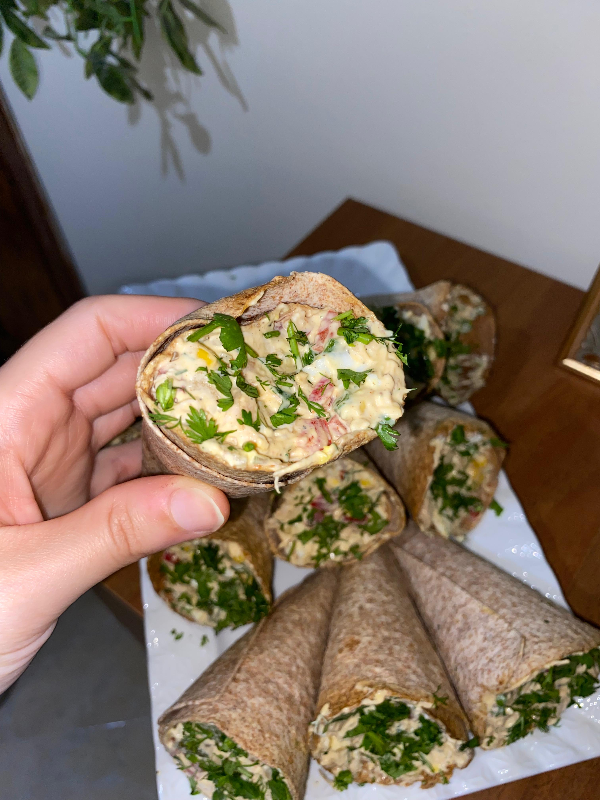
Tiempo
30m
Raciones
4 Pers.
Dificultad
Muy Fácil
Kefta a la Parrilla Especiada
Ingredientes
- • 600g Carne picada de ternera/cordero
- • 1 Cebolla dulce picada muy fina
- • Cilantro fresco y menta picada
- • Comino, pimentón y sal fina
- • Pinchos o brochetas metálicas
Preparación Paso a Paso
- 1Amasar bien la carne con las especias, hierbas y cebolla picada.
- 2Moldear la carne alargada alrededor de las brochetas o formando cilindros.
- 3Asar a la parrilla o sartén con carbón durante 3-4 minutos por cada lado.
- 4Servir bien caliente acompañada de pan batbout recién hecho y té a la menta.
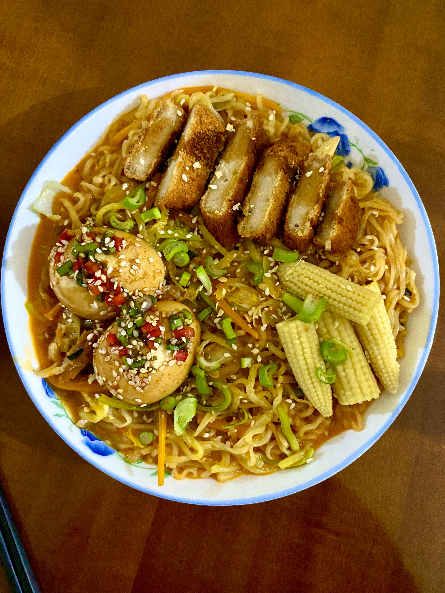
Tiempo
50m
Raciones
4 Pers.
Dificultad
Fácil
Tajine de Pescado a la Chermoula
Ingredientes
- • 800g Rodajas de pescado blanco
- • Majao Chermoula (Ajo, cilantro, comino)
- • Rodajas de patata y pimiento rojo
- • Tomates maduros en rodajas
- • Limón confitado y aceitunas
Preparación Paso a Paso
- 1Marinar el pescado fresco con la salsa Chermoula durante 30 minutos.
- 2Colocar en el fondo del tajín las patatas y pimientos para hacer de cama.
- 3Poner el pescado encima, regar con el resto de adobo y tapar.
- 4Cocer a fuego medio durante 35 minutos hasta ablandar las verduras.
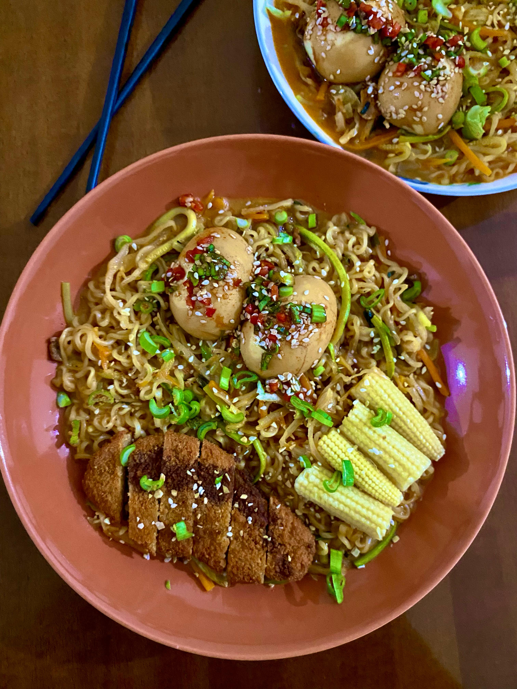
Tiempo
2h 00m
Raciones
10 Pers.
Dificultad
Alta
Chebakia Tradicional de Miel y Sésamo
Ingredientes
- • 500g Harina de trigo común
- • 1 Taza sésamo molido frito
- • Anís, canela y agua de azahar
- • Miel natural caliente para baño
- • Semillas de sésamo para espolvorear
Preparación Paso a Paso
- 1Amasar bien los ingredientes hasta tener una masa firme. Cortar en tiras finas.
- 2Plegar entrelazando la masa para formar la figura de flor clásica.
- 3Freír en abundante aceite muy caliente hasta que estén bien doradas.
- 4Sumergir de inmediato en miel tibia y espolvorear con semillas de sésamo.
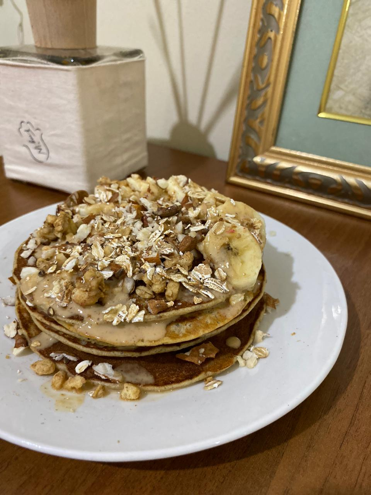
Tiempo
15m
Raciones
4 Pers.
Dificultad
Muy Fácil
Té Verde Tradicional a la Menta
Ingredientes
- • 2 Cucharadas Té verde Gunpowder
- • 1 Manojo grande Menta fresca (Naana)
- • 4 Cucharadas Azúcar de pilón o azúcar
- • 750ml Agua hirviendo
Preparación Paso a Paso
- 1Enjuagar el té verde con agua hirviendo en la tetera para quitar el amargor.
- 2Añadir el azúcar y el agua hirviendo. Dejar infusionar a fuego suave 2 minutos.
- 3Introducir el manojo fresco de menta limpia directamente en la tetera.
- 4Escanciar desde alto varias veces en vaso de cristal para crear la espumilla ideal.